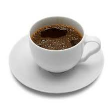
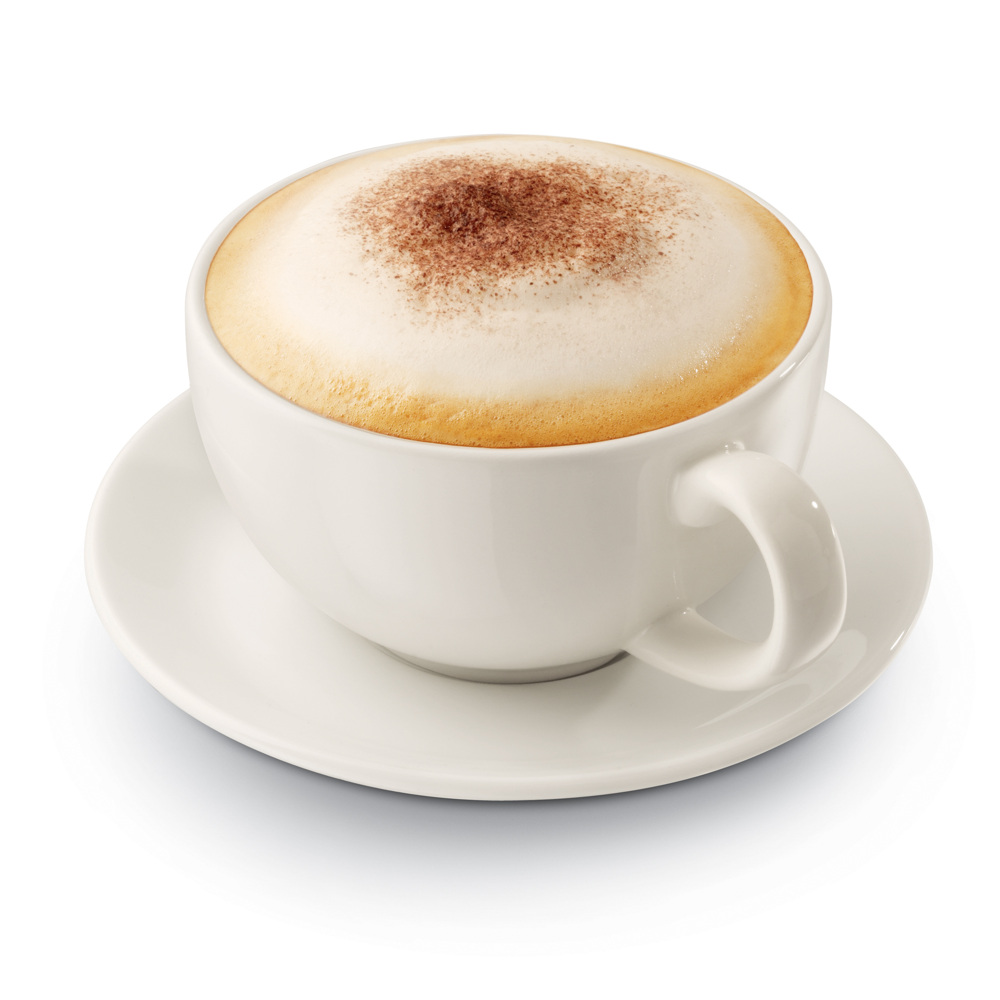
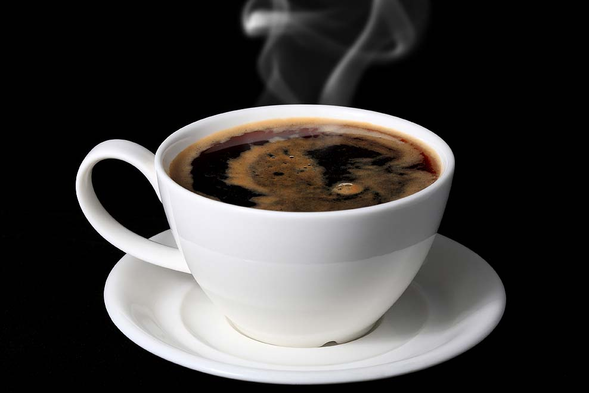
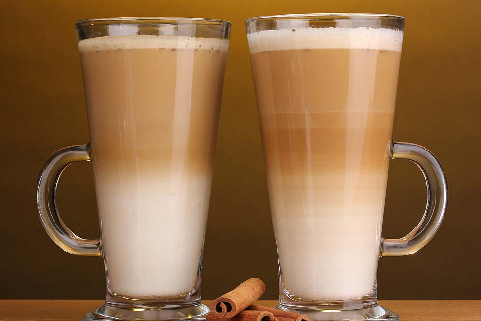
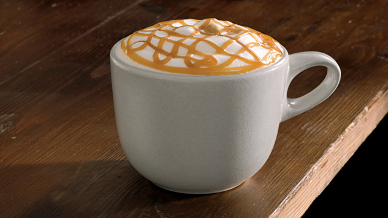

Drink
Espresso
Espresso is a strong black coffee made by forcing steam through dark-roast aromatic coffee beans at high pressure in an espresso machine. A perfectly brewed espresso will have a thick, golden-brown crema (foam) on the surface. If the crema is good, the sugar you add will float on the surface for a couple of seconds before slowly sinking to the bottom. Espresso is the foundation for a wide variety of specialty coffee drinks, such as the cappuccino, but many aficionados and purists insist that adding anything (besides a bit of sugar) is blasphemy, akin to Scotch lovers mixing their single malt with Coke.
Cappuccino
This hugely popular coffee drink has become a staple that even the most common of corner coffee shops carries (or at least a version of it). A true cappuccino is a combination of equal parts espresso, steamed milk and milk froth. This luxurious drink, if made properly, can double as a dessert with its complex flavors and richness.
Americano
An Americano is a single shot of espresso added to a cup of hot water. The name is thought to have originated as a bit of an insult to Americans, who had to dilute their espresso when it first gained popularity on this side of the pond. Many coffee houses have perfected it, however, and the result has become a creamy, rich espresso-based coffee that you can sip and savor before jumping on your Vespa and heading to the soccer field.
Caffe Latte
A caffe latte is a single shot of espresso to three parts of steamed milk.
Caf au Lait
This traditional French drink is similar to a caffe latte except that it is made with brewed coffee instead of espresso, in a 1:1 ratio with steamed milk. It is considered a weaker form of caffe latte.
Caf Mocha (Mochachino)
This is a cappuccino or a caffe latte with chocolate syrup or powder added. There can be wide variations in exactly how this is prepared, so ask your coffee house how they do it before you order.
Caramel Macchiato
This is another variation that is prepared in a number of ways by different coffee houses. The most common method is combining espresso, caramel and foamed milk, though some use steamed milk. Often, vanilla is added to provide extra flavor.